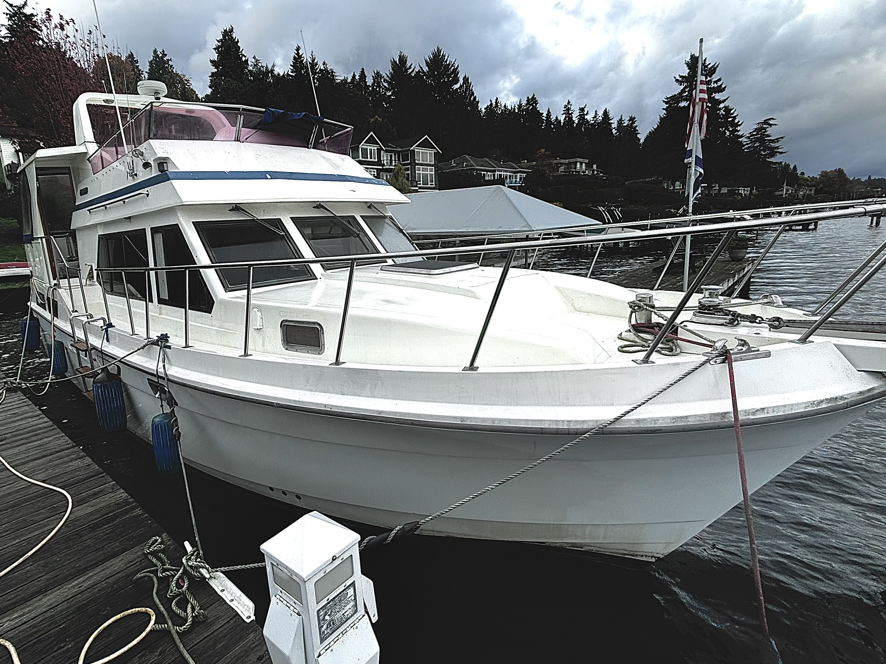
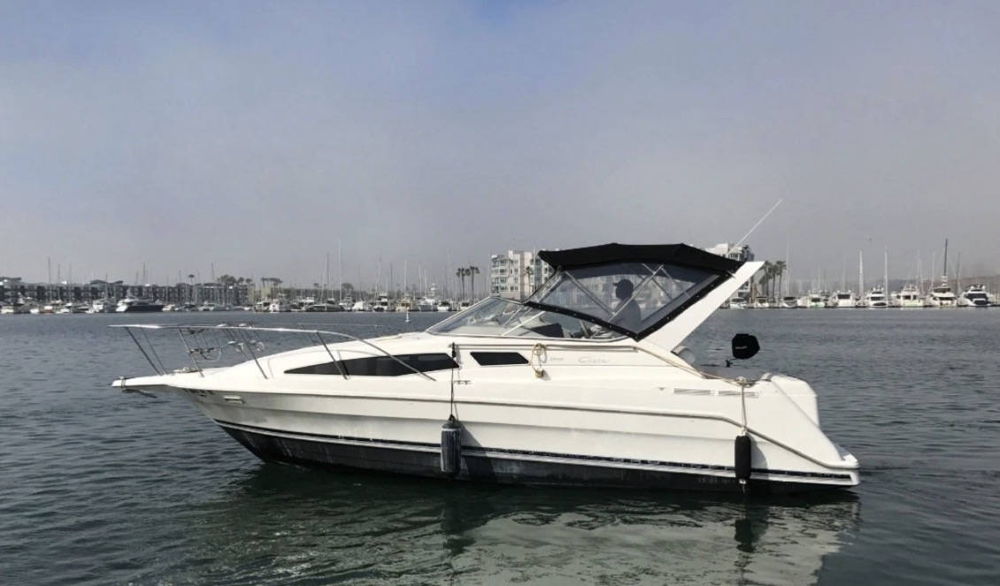
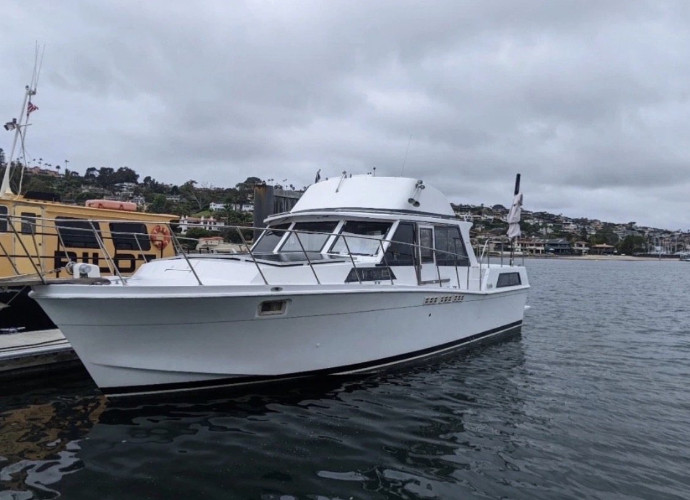
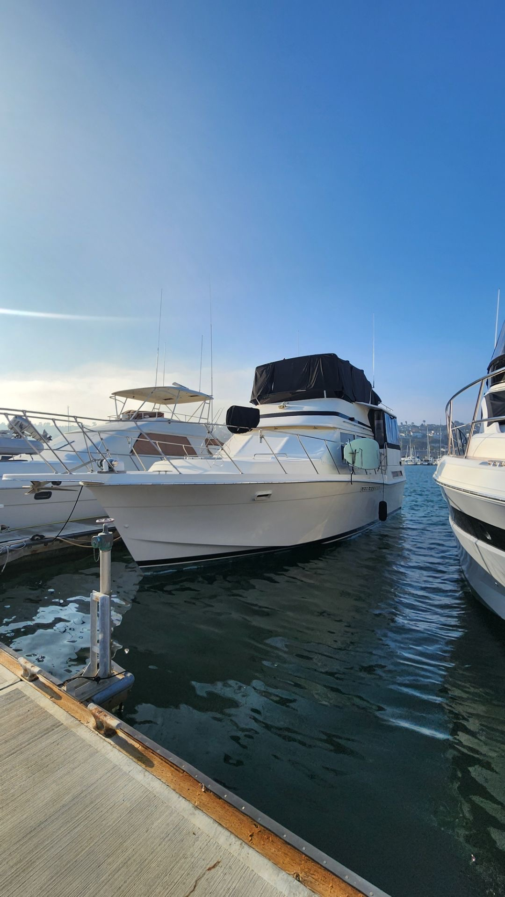

Boat won’t sell?
If Marketplace, Craigslist, or marina word-of-mouth is going nowhere, donation is a faster, cleaner next step.
Share your contact details and we will follow up about the next steps. It is free and there is no obligation.
📞 Call Now: (855) 557‑3703 or fill out the quick form below
Prefer to talk to a real person? Call (855) 557‑3703 anytime.
Running or not, stop paying for storage, moorage, and maintenance on a boat you no longer use. We manage the sale, take care of the paperwork, and put the proceeds to work for families and communities in need.
You are not alone — and you do not have to keep paying for it. Donating is often the cleanest way out.
If Marketplace, Craigslist, or marina word-of-mouth is going nowhere, donation is a faster, cleaner next step.
Stop letting monthly moorage, storage, insurance, and maintenance costs stack up on a boat you do not use.
Downsizing, settling an estate, or simply ready to move on — we make handing it off simple and respectful.
Most owners are surprised how little they have to do.
Share your name and phone number, with email optional. We follow up to gather any boat details needed for the next step.
If your boat is a fit, we coordinate the next steps and the sale so you are not stuck managing buyers, listings, or showings.
After completion you receive clear donation documentation and tax-related paperwork where applicable and allowed by law.
Powerboats, sailboats, cruisers, yachts, PWCs, trailers, and USCG‑documented vessels — running or not. Clean title preferred; we review liens and documentation during intake. Not sure if your boat qualifies? Send it in or call us — we will tell you what is possible.
A look at boats owners have recently handed off to us.




Boats for Charity turns donated boats into resources that strengthen families and communities. We keep the process simple and transparent, then direct proceeds to programs that provide practical help—food, housing, education, and veteran support—so every vessel can carry hope a little farther.
Turning Boats into Blessings isn’t just our tagline; it’s our promise: clear communication, compliant paperwork, and compassionate impact with every donation.
No. Starting a donation is free and there is no obligation. We review your boat and walk you through your options before anything moves forward.
Often, yes. We review powerboats, sailboats, cruisers, yachts, PWCs, trailers, and non-running vessels case by case. When in doubt, send it in or call us.
No. With our agency approach we sell as your authorized agent and donate all proceeds to the nonprofit, and help you obtain appropriate tax documentation (such as Form 1098‑C) where applicable.
Under the quick‑sale model, your deduction generally equals the boat's gross sale price as reported on Form 1098‑C when applicable. Please consult a tax professional about your specific situation.
Often within a few days after intake, depending on documentation status and market interest. We keep you updated along the way.
Call us at (855) 557‑3703 or send your details through the form above and a real person will reach out.
It is free, simple, and there is no obligation. Start online in about two minutes or call us now.